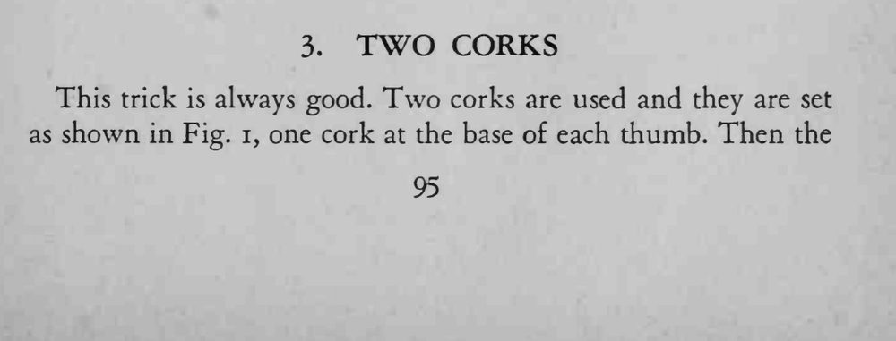
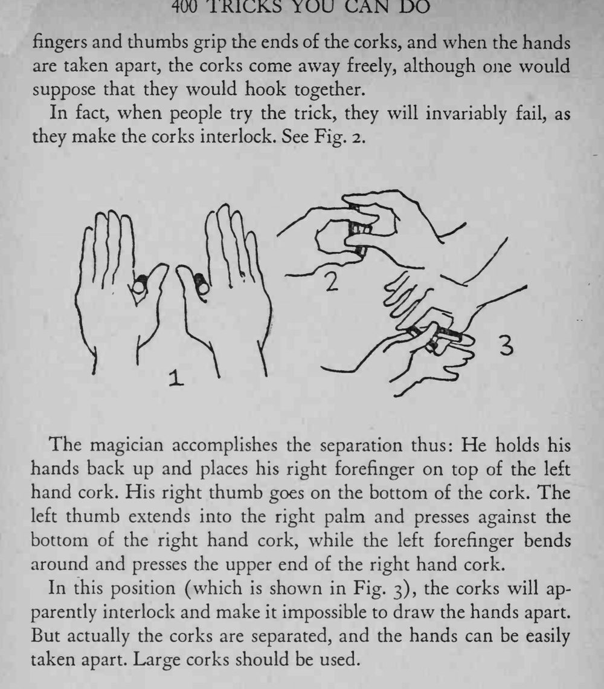

两手各用拇指和手指夹住一个软木塞，看上去两个塞子勾在一起，可两手一分就轻松拉开了。
一定要用大软木塞，姿势摆对后两手反而最容易拉开。


This trick is always good. Two corks are used and they are set as shown in Fig. i, one cork at the base of each thumb. Then the fingers and thumbs grip the ends of the corks, and when the hands are taken apart, the corks come away freely, although one would suppose that they would hook together. In fact, when people try the trick, they will invariably fail, as they make the corks interlock. See Fig. 2. The magician accomplishes the separation thus: He holds his hands back up and places his right forefinger on top of the left hand cork. His right thumb goes on the bottom of the cork. The left thumb extends into the right palm and presses against the bottom of the right hand cork, while the left forefinger bends around and presses the upper end of the right hand cork. In this position (which is shown in Fig. 3), the corks will apparently interlock and make it impossible to draw the hands apart. But actually the corks are separated, and the hands can be easily taken apart. Large corks should be used.